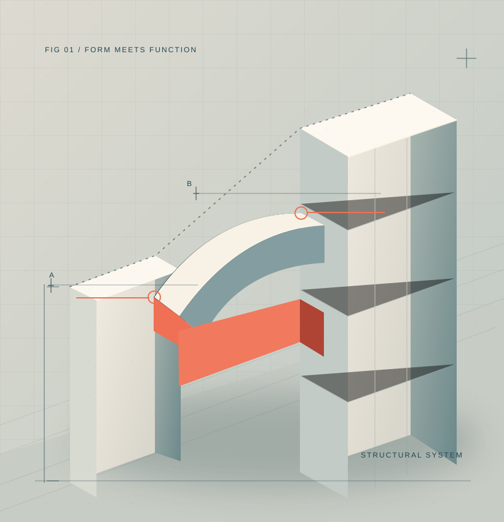
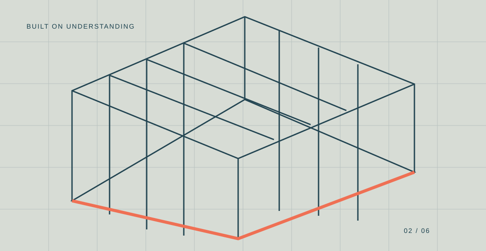
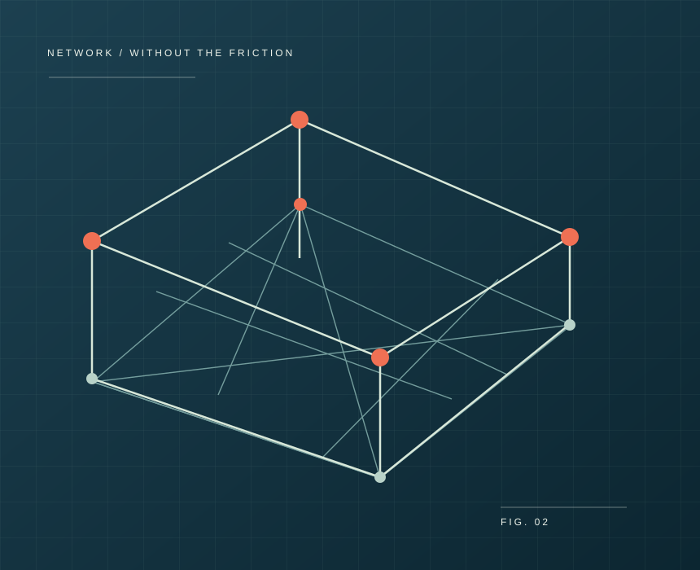

Technology
for the way
you design.
We make complex technology work for the firms shaping our world. Purpose-built IT, cloud, cybersecurity, and strategic guidance for architecture, engineering, and design.

Architecture is in our DNAgreat workForm × function
A deeper understanding.
Everything behind
your best work.
We handle the technology behind the work so your team can spend less time managing systems and more time designing what matters.
Managed IT
Responsive support and proactive management that keep project teams focused on work, not troubleshooting.
Cloud & collaboration
Thoughtful cloud systems for large files, distributed teams, and a more connected way of working.
Cybersecurity
Protection for valuable project data without bringing collaboration to a halt.
Strategic IT leadership
A technology perspective at the leadership table, connected to budgets, operations and growth.
AED applications
Practical experience with the platforms and demanding environments your teams use every day.
AI & emerging tech
A clear-eyed approach to AI opportunities, readiness, and governance.
A technology partner who gets it.
An architecture firm isn't a law firm with different software. The tools are demanding, the files are enormous, and the culture is wonderfully collaborative.
We know your world because we've worked inside it. We combine technical depth with a practical understanding of how design businesses operate.
- 01 Technical fluency in design workflows
- 02 Financial understanding of practice economics
- 03 Cultural fluency in creative organizations


From complicated
to connected.
A 120-person design firm with three offices was running virtual desktops and offsite files. Flying Buttress helped move it to a cloud-first model with simpler access, stronger security, and lower cost than the previous environment.
The Flying Buttress team are masters of strategic planning. They understand how architects work and the challenges they face while actively seeking innovative solutions to improve their efficiency.
A point of view on
what's next.
What architecture firms actually need from IT
On why most technology support misses the point, and what a design-native partner should understand.
How do you prepare for cloud migration?
Vision, application dependencies, budget, security and a transition plan designed around the business.
Setting up remote teams for success
What it takes to give distributed design teams the right tools, access, and support.